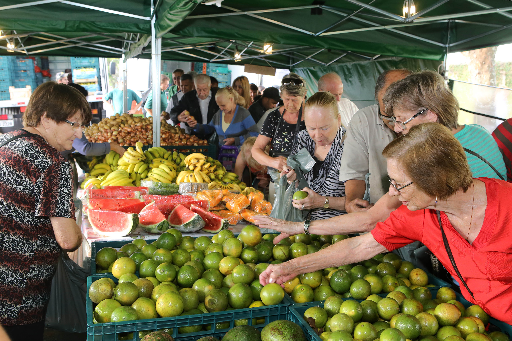

Histórias que Inspiram
Conheça relatos de quem vive e fortalece a conexão entre o campo e a cidade.

Conectando Vidas entre o Rural e o Urbano
Conheça relatos de quem vive e fortalece a conexão entre o campo e a cidade.
Descubra como os alimentos percorrem o caminho até sua mesa e a importância de valorizar o produtor rural.
Saiba Como São Organizadas, As Feiras De Alimentos Agrícolas.
Aprenda mais sobre agroecologia, agricultura familiar e o papel de cada um nessa conexão.